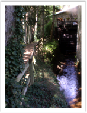
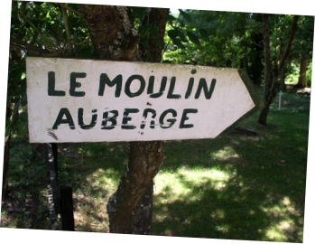

Auberge Le Moulin Auberge de campagne · 42430 Juré
Dans cet ancien moulin à eau transformé en auberge de campagne, Jean-Hugues Demure et sa sœur Olivia vous proposent des menus campagnards à base de produits du terroir.




Au bord de l'Aix
Un moulin du seizième siècle
L'auberge est située au bord de l'Aix, dans un ancien moulin du XVIe siècle. Les roues à aubes fournissent toujours l'électricité de la maison. Cadre rustique, cheminée à feu ouvert, terrasse ombragée : on vient ici pour une cuisine traditionnelle faite avec les produits de la maison, cidre et légumes, bio et locaux.
Avant de prendre la route
Préparer votre venue
Choisissez une date : le calendrier vous dit tout de suite si l'auberge est ouverte. Pour un menu sur commande, indiquez le nombre de convives : votre demande est prête à envoyer par mail ou à dicter au téléphone.
En images
Le moulin


à fournir
Accès
Venir au Moulin
L'Auberge du Moulin, à Juré (42), se situe non loin de l'autoroute A72, entre Clermont-Ferrand et Saint-Etienne.
Contact
À bientôt au Moulin
Téléphone : 04 77 62 55 2442430 Juré
Week-ends et jours fériés de début mars au 11 novembre.
Chèque, Chèque-Vacances, espèces. Animaux acceptés.